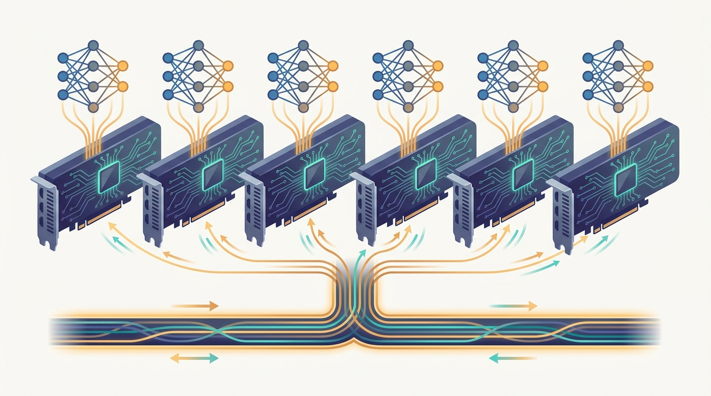

"Eight of us hold the exact same weights and never speak about anything except gradients. Once per step we shout our sums into the ring, agree on the average, and pretend we each trained the whole batch alone."
A Replica Who Has Made Peace With All-Reduce
Data-parallel training replicates the entire model on every accelerator, splits each mini-batch across them, and uses an all-reduce to sum the per-replica gradients into the exact gradient of the full batch, so that the only thing standing between you and near-linear speedup is hiding that all-reduce behind the backward pass. The idea rests on a single identity you met in Part I: the gradient of a sum is the sum of the gradients, so the average of the gradients each replica computes on its slice of the batch equals the gradient a single machine would compute on the whole batch. That exactness is what makes data parallelism the seed of the entire book, and it is why this chapter opens Part IV. But the identity is free only on paper. In practice every replica must, on every step, exchange a full copy of the model's gradients with every other replica, and a modern network has hundreds of millions to billions of parameters, so the communication can easily cost more than the computation it is meant to accelerate. The chapter is the engineering of making that exchange disappear. It begins with why deep learning needs more than one device at all, then climbs the ladder from a single GPU to many GPUs in one box to many boxes across a network, naming what changes at each rung. On that footing it develops data parallelism proper, the replicate-split-average pattern, then the all-reduce that synchronizes the gradients and the ring algorithm that makes its cost independent of the number of workers. The heart of the chapter is the systems trick that turns a correct-but-slow scheme into a fast one: bucketing gradients into chunks and launching their all-reduce the moment each chunk is ready, so communication overlaps the still-running backward pass instead of waiting for it. It then grounds all of this in the two frameworks that dominate practice, PyTorch Distributed Data Parallel and Horovod, adds mixed precision as the per-node enabler that halves both the compute and the bytes on the wire, and closes by confronting the bottlenecks, stragglers, network limits, and large-batch optimization difficulties, that separate the linear speedup on the slide from the sublinear one on the cluster.
Chapter Overview
This is the first chapter of Part IV, and it marks a turn in the book's argument. Part III asked how to learn from data spread across machines you did not fully control; Part IV asks how to train one very large model fast on a cluster you do. The binding constraint flips. There the difficulty was that the data could not move, was not identically distributed, and had to stay private. Here the data is yours to scatter and reshuffle freely, and the difficulty is that a single forward and backward pass over a deep network is too slow on one accelerator, so the model, the batch, or both must be spread across many. Data parallelism is the first and simplest way to spread the work, and it is the foundation the rest of the part builds on: model and pipeline parallelism in Chapter 16 enter only when the model itself no longer fits on one device, and the sharded optimizers of that chapter are data parallelism with the redundant state removed.
The nine sections fall into three groups. The first sets the scene and the hardware: Section 15.1 argues why deep learning outgrew a single device, and Section 15.2 climbs the ladder from one GPU to multi-GPU to multi-node, because the bottleneck and the available interconnect change at every rung. The second group builds the core mechanism: Section 15.3 develops data parallelism as replicate-split-average, Section 15.4 develops the all-reduce that synchronizes the gradients and the ring algorithm behind it, and Section 15.5 develops the bucketing and overlap that hide the all-reduce behind the backward pass and recover most of the lost speedup. The third group makes it real: Section 15.6 grounds the pattern in PyTorch Distributed Data Parallel, Section 15.7 in Horovod and the wider ecosystem, Section 15.8 adds mixed precision as the per-node enabler that shrinks both compute and communication, and Section 15.9 confronts the practical bottlenecks that cap how close you get to linear scaling.
Read in order, the nine sections take you from "one GPU cannot finish the epoch" to "a multi-node cluster trains the same model at near-linear speedup, with the communication tucked invisibly behind the computation." The thread to watch is the exact-gradient identity of Part I made practical: data parallelism is correct because the summed gradients are exact, but it is fast only because the summation is overlapped, compressed, and scheduled with care. Every later parallelism strategy in the part, pipeline, tensor, expert, and sharded, is measured against the simplicity and the limits of the data-parallel baseline this chapter establishes.
Prerequisites
This chapter assumes the communication and optimization background built earlier in the book. From Chapter 4: Communication Primitives for Distributed Training you carry the single most important tool, all-reduce, and the ring algorithm that makes its bandwidth cost independent of the number of workers, because gradient synchronization in Sections 15.4 and 15.5 is an all-reduce on every step and the whole chapter turns on hiding its cost. From Chapter 10: Distributed Optimization you carry the data-parallel gradient itself, the identity that the average of per-worker gradients equals the full-batch gradient, the synchronous-versus-asynchronous tradeoff, and the large-batch convergence difficulties that return in Section 15.9 as the reason scaling efficiency is not free. The chapter assumes comfortable Python and PyTorch, a working understanding of mini-batch SGD and of training a neural network through forward and backward passes, and a basic picture of GPU memory and floating-point formats, since mixed precision in Section 15.8 is a statement about numerical range and storage. No prior multi-GPU or cluster experience is required; Section 15.2 builds the hardware picture from a single device upward.
Learning Objectives
- Explain why a single accelerator cannot keep pace with modern deep learning, naming the dataset-size, model-size, and epoch-time pressures that force training across many devices.
- Distinguish single-GPU, multi-GPU single-node, and multi-node training, and identify how the dominant bottleneck and the available interconnect (NVLink, PCIe, InfiniBand) change at each rung.
- Derive data parallelism as replicate-split-average, and show why summing the per-replica gradients yields the exact gradient of the full mini-batch.
- Describe gradient synchronization with all-reduce, and explain why the ring all-reduce makes the per-step communication cost independent of the worker count.
- Explain gradient bucketing and communication/computation overlap, and reason about how launching all-reduce on ready buckets during the backward pass recovers most of the speedup a naive implementation loses.
- Implement and configure PyTorch Distributed Data Parallel, including process-group setup, device placement, and the DistributedSampler, and state what the wrapper handles internally.
- Contrast Horovod's all-reduce-centric API with native framework parallelism, and place both within the broader distributed-training ecosystem.
- Explain mixed precision as a per-node enabler, how reduced-precision storage and compute shrink both memory and communicated bytes while loss scaling preserves convergence.
- Diagnose the practical bottlenecks, stragglers, network bandwidth, input pipeline limits, and large-batch optimization, that separate near-linear from sublinear scaling efficiency.
If you keep one thing from this chapter, keep this: data-parallel training replicates the model on every accelerator and averages their gradients with an all-reduce, which is correct because the summed gradients are exact and fast only because that all-reduce is bucketed and overlapped with the backward pass. Read forward, the sections build the craft in layers: first why one device is not enough and how the hardware ladder runs from one GPU to a multi-node cluster, then data parallelism itself, the all-reduce that synchronizes it, and the bucketing-and-overlap trick that hides the communication; then the frameworks that ship it, PyTorch DDP and Horovod, mixed precision as the per-node enabler, and the bottlenecks that cap scaling efficiency. Read as a question, the chapter asks of any model whose epoch is too slow on one accelerator: how do you spread its training across many without letting the gradient exchange eat the speedup you came for. The roadmap below walks the nine sections that answer it.
Chapter Roadmap
- 15.1 Why Deep Learning Needs Distributed Training Lays out the dataset-size, model-size, and epoch-time pressures that make a single accelerator insufficient, and frames distributed training as the response that keeps wall-clock time tractable as models and data grow.
- 15.2 Single-GPU, Multi-GPU, and Multi-Node Training Climbs the hardware ladder from one GPU to many GPUs in a box to many boxes across a network, naming how the dominant bottleneck and the interconnect, NVLink, PCIe, and InfiniBand, change at each rung.
- 15.3 Data Parallelism Develops the replicate-split-average pattern at the heart of the chapter, and shows why summing the gradient each replica computes on its slice of the batch yields the exact gradient of the full mini-batch.
- 15.4 Gradient Synchronization and All-Reduce Develops the all-reduce that combines the per-replica gradients on every step, and explains why the ring algorithm makes its bandwidth cost independent of the number of workers.
- 15.5 Gradient Bucketing and Communication/Computation Overlap Develops the systems trick that turns a correct scheme into a fast one, grouping gradients into buckets and launching their all-reduce as each bucket fills so communication overlaps the still-running backward pass.
- 15.6 PyTorch Distributed Data Parallel Grounds the pattern in the production framework, walking through process-group setup, device placement, the DistributedSampler, and what the DDP wrapper handles for you internally.
- 15.7 Horovod and the Broader Ecosystem Surveys Horovod's all-reduce-centric, framework-agnostic API and places it alongside native parallelism and the wider tooling that automates distributed training.
- 15.8 Mixed Precision as a Per-Node Enabler Traces the precision ladder from FP32 through FP16, BF16, and FP8/MXFP8: derives the memory and bandwidth gains at each step, explains block scaling and FP32 accumulation, and shows how DeepSeek-V3 achieved BF16-equivalent quality at FP8 on 671B parameters.
- 15.9 Practical Bottlenecks and Scaling Efficiency Confronts the gap between linear and real-world scaling, diagnosing stragglers, network limits, input-pipeline stalls, and large-batch optimization as the forces that cap how many devices actually help.
Read the nine sections in order and you will hold a working blueprint for training one large model fast across many accelerators: Section 15.1 and Section 15.2 establish why one device is not enough and how the hardware ladder is built, Sections 15.3 through 15.5 build data parallelism, the all-reduce that synchronizes it, and the bucketing-and-overlap that hides the communication, and Sections 15.6 through 15.9 ground it in PyTorch DDP and Horovod, add mixed precision, and confront the scaling bottlenecks. The thread to watch is the all-reduce of Chapter 4 returning as the per-step engine of training, and the data-parallel gradient of Chapter 10 turning from a convergence identity into a systems-engineering problem.
What's Next?
This chapter establishes the data-parallel baseline: every accelerator holds a full copy of the model, and the only thing crossing the wire is gradients. That baseline has one breaking point, which the next chapter is built around. Data parallelism assumes the model fits on a single device, and the largest models do not. Chapter 16: Model, Pipeline, and Sharded Parallelism takes up training when the model itself must be split: tensor parallelism that shards individual layers across devices, pipeline parallelism that assigns consecutive layers to different devices and streams micro-batches through them, and the sharded data parallelism of ZeRO and FSDP that keeps the data-parallel structure of this chapter but partitions the redundant optimizer state, gradients, and parameters across the replicas rather than copying them. The all-reduce you mastered here reappears there decomposed into the reduce-scatter and all-gather of Chapter 4, and the gradient synchronization you learned to hide behind the backward pass becomes one collective among several that must be scheduled together. Read it next, and watch the single full replica of this chapter fracture into shards that each hold only their slice of a model too large for any one device.
Bibliography & Further Reading
Foundations of Data-Parallel Training
Goyal, P., Dollar, P., Girshick, R., Noordhuis, P., Wesolowski, L., Kyrola, A., Tulloch, A., Jia, Y., He, K. "Accurate, Large Minibatch SGD: Training ImageNet in 1 Hour." arXiv:1706.02677, 2017. arxiv.org/abs/1706.02677
The work that showed data-parallel training scales to large batches with a linear learning-rate scaling rule and warmup, the empirical foundation for the scaling-efficiency discussion of Section 15.9.
Li, S., Zhao, Y., Varma, R., Salpekar, O., Noordhuis, P., Li, T., Paszke, A., Smith, J., Vaughan, B., Damania, P., Chintala, S. "PyTorch Distributed: Experiences on Accelerating Data Parallel Training." Proc. VLDB Endowment, arXiv:2006.15704, 2020. arxiv.org/abs/2006.15704
The system paper behind PyTorch DistributedDataParallel, detailing gradient bucketing and computation/communication overlap, the direct reference for Sections 15.5 and 15.6.
Sergeev, A., Del Balso, M. "Horovod: Fast and Easy Distributed Deep Learning in TensorFlow." arXiv:1802.05799, 2018. arxiv.org/abs/1802.05799
The paper introducing Horovod's ring-all-reduce-based, framework-agnostic approach to distributed training, the basis of Section 15.7.
Large-Batch Optimization
You, Y., Gitman, I., Ginsburg, B. "Large Batch Training of Convolutional Networks (LARS)." arXiv:1708.03888, 2017. arxiv.org/abs/1708.03888
The layer-wise adaptive rate scaling optimizer that keeps large-batch data-parallel training stable, one answer to the convergence difficulties of Section 15.9.
You, Y., Li, J., Reddi, S., Hseu, J., Kumar, S., Bhojanapalli, S., Song, X., Demmel, J., Keutzer, K., Hsieh, C.-J. "Large Batch Optimization for Deep Learning: Training BERT in 76 Minutes (LAMB)." arXiv:1904.00962, 2019. arxiv.org/abs/1904.00962
The adaptive large-batch optimizer that extended LARS to transformer training, the method behind the very-large-batch scaling that Section 15.9 treats as the frontier of data parallelism.
Mixed Precision
Micikevicius, P., Narang, S., Alben, J., Diamos, G., Elsen, E., Garcia, D., Ginsburg, B., Houston, M., Kuchaiev, O., Venkatesh, G., Wu, H. "Mixed Precision Training." arXiv:1710.03740, 2017. arxiv.org/abs/1710.03740
The paper that introduced FP16 training with loss scaling and an FP32 master copy of the weights, the technical core of the mixed-precision enabler in Section 15.8.
PyTorch. "Automatic Mixed Precision Package (torch.amp)." Official documentation. pytorch.org/docs/stable/amp.html
The reference for autocast and GradScaler, the production API that implements the mixed-precision training of Section 15.8 in a few lines.
Frameworks and Tools
PyTorch. "Distributed Data Parallel (DDP) Notes." Official documentation. pytorch.org/docs/stable/notes/ddp.html
The reference describing DDP internals, gradient bucketing, and the reducer, the implementation companion to Sections 15.5 and 15.6.
NVIDIA. "NCCL: NVIDIA Collective Communications Library." Official documentation. docs.nvidia.com/deeplearning/nccl
The GPU collective-communication library that implements the ring all-reduce underneath PyTorch DDP and Horovod, the substrate behind the gradient synchronization of Section 15.4.
Hugging Face. "Accelerate: Run your PyTorch training across any distributed configuration." Official documentation. huggingface.co/docs/accelerate
The library that wraps DDP, mixed precision, and launch configuration behind a thin API, an example of the ecosystem tooling surveyed in Section 15.7.